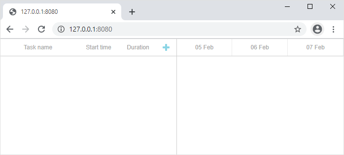
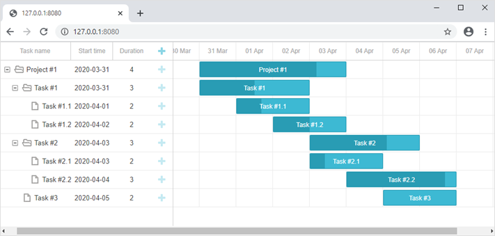

In this tutorial you will find necessary information on how to create a PHP-based Gantt Chart using Slim 4 Framework and RESTful API on the server.
This tutorial uses Slim Framework v4.x. If you need a tutorial for an older version, check the Slim Framework v3.x guide.
There are tutorials intended for building server-side integration with the help of other platforms and frameworks:
We will use the Slim 4 framework for routing and MySQL as a data storage. CRUD logic will rely on PDO and will be generic enough to be usable with any other framework.
The complete source code is available on GitHub.
We will make use of a skeleton application for the Slim 4 framework.
Firstly, we need to import the project and install it. You can easily do it with the help of Composer:
php composer.phar create-project slim/slim-skeleton gantt-rest-php
If you have Composer installed globally, you can apply the following command:
composer create-project slim/slim-skeleton gantt-rest-php
Then you should check if everything works fine. For this, go to the application folder and run a web server:
cd gantt-rest-php
php -S 0.0.0.0:8080 -t public public/index.php
After that you can open http://127.0.0.1:8080 in a browser and you will see the default Slim page.
The next step is to create a page with our gantt chart. It includes two simple sub-steps, described below.
Create a basic.html file in the app app/templates folder. We will place the gantt chart there and set up prerequisites to implement data loading.
The full code looks as follows:
app/templates/basic.html
<!DOCTYPE html>
<html>
<head>
<meta http-equiv="Content-type" content="text/html; charset=utf-8">
<script src="https://cdn.dhtmlx.com/gantt/edge/dhtmlxgantt.js"></script>
<link href="https://cdn.dhtmlx.com/gantt/edge/dhtmlxgantt.css" rel="stylesheet">
<style type="text/css"> html, body{
height:100%;
padding:0px;
margin:0px;
overflow: hidden;
}
</style>
</head>
<body>
<div id="gantt_here" style='width:100%; height:100%;'></div>
<script type="text/javascript"> gantt.init("gantt_here");
</script>
</body>
</html>
This code will add an empty gantt chart to the page. A user will be able to create and modify tasks and links, but no changes will be stored after the page reload.
After a new page is added, you need to make it accessible from a browser. Add a route to app/routes.php:
app/routes.php
$app->get('/', function (Request $request, Response $response) {
$payload = file_get_contents(__DIR__.'/templates/basic.html');
$response->getBody()->write($payload);
return $response;
});
Launch the app again:
command line
php -S 0.0.0.0:8080 -t public public/index.php
Now you can open http://127.0.0.1:8080/ in a browser and you will see that a gantt is rendered on the page.

So, you've got an empty gantt. It's time to create a database and connect it to our app.
You can create a database from your favorite mysql-client (for example, phpMyAdmin), or via the console. Here is SQL to create a simple database with two tables.
CREATE DATABASE IF NOT EXISTS `gantt`;
USE `gantt`;
CREATE TABLE `gantt_links` (
`id` int(11) NOT NULL AUTO_INCREMENT,
`source` int(11) NOT NULL,
`target` int(11) NOT NULL,
`type` varchar(1) NOT NULL,
PRIMARY KEY (`id`)
);
CREATE TABLE `gantt_tasks` (
`id` int(11) NOT NULL AUTO_INCREMENT,
`text` varchar(255) NOT NULL,
`start_date` datetime NOT NULL,
`duration` int(11) NOT NULL,
`progress` float NOT NULL,
`parent` int(11) NOT NULL,
PRIMARY KEY (`id`)
);
When a database is ready, we can go further and populate the gantt_tasks table with some test data. You can use the following SQL sample for this:
INSERT INTO `gantt_tasks` VALUES ('1', 'Project #1', '2020-03-31 00:00:00',
'4', '0.8', '0');
INSERT INTO `gantt_tasks` VALUES ('2', 'Task #1', '2020-03-31 00:00:00',
'3', '0.5', '1');
INSERT INTO `gantt_tasks` VALUES ('3', 'Task #2', '2020-04-01 00:00:00',
'2', '0.7', '1');
INSERT INTO `gantt_tasks` VALUES ('4', 'Task #3', '2020-04-02 00:00:00',
'2', '0', '1');
INSERT INTO `gantt_tasks` VALUES ('5', 'Task #1.1', '2020-04-03 00:00:00',
'3', '0.34', '2');
INSERT INTO `gantt_tasks` VALUES ('6', 'Task #1.2', '2020-04-03 13:22:17',
'2', '0.5', '2');
INSERT INTO `gantt_tasks` VALUES ('7', 'Task #2.1', '2020-04-04 00:00:00',
'3', '0.2', '3');
INSERT INTO `gantt_tasks` VALUES ('8', 'Task #2.2', '2020-04-05 00:00:00',
'2', '0.9', '3');
Check a detailed example here.
So, we've finished preparing our project. Now we can proceed with data loading.
Now it's time to implement loading from the database. On the client side we'll request data using the gantt.load method:
app/templates/basic.html
gantt.config.date_format = "%Y-%m-%d %H:%i:%s";
gantt.init("gantt_here");
gantt.load("/data");
This command will send an AJAX request to the specified URL, the response is expected to contain Gantt data in the JSON format.
Also, note that we've specified the date_format value. This is how we tell gantt what format of dates the data source will use, so the client side could parse them.
Thus, we should add a necessary handler for such a request on the backend. Open the app/routes.php file and add a new route:
app/routes.php
$app->get('/data', 'getGanttData');
After that, we need to implement the getGanttData logic. In order not to pollute index.php, we'll declare all gantt-related stuff in a separate file.
Let's create a new file app/gantt.php and add the required code:
app/gantt.php
function getConnection()
{
return new PDO("mysql:host=localhost;dbname=gantt", "root", "root", [
PDO::ATTR_ERRMODE => PDO::ERRMODE_EXCEPTION,
PDO::ATTR_DEFAULT_FETCH_MODE => PDO::FETCH_ASSOC
]);
}
function getGanttData($request, $response, $args) {
$db = getConnection();
$result = [
"data"=> [],
"links"=> []
];
foreach($db->query("SELECT * FROM gantt_tasks") as $row){
$row["open"] = true;
array_push($result["data"], $row);
}
foreach ($db->query("SELECT * FROM gantt_links") as $link){
array_push($result["links"], $link);
}
$payload = json_encode($result);
$response->getBody()->write($payload);
return $response->withHeader("Content-Type", "application/json");
};
And include app/gantt.php into app/routes.php:
app/routes.php
<?php
declare(strict_types=1);
use App\Application\Actions\User\ListUsersAction;
use App\Application\Actions\User\ViewUserAction;
use Psr\Http\Message\ResponseInterface as Response;
use Psr\Http\Message\ServerRequestInterface as Request;
use Slim\App;
use Slim\Interfaces\RouteCollectorProxyInterface as Group;
// Add dhtmlxGantt CRUD
require __DIR__ . "/gantt.php";
return function (App $app) {
$app->get("/", function (Request $request, Response $response) {
$payload = file_get_contents(__DIR__."/templates/basic.html");
$response->getBody()->write($payload);
return $response;
});
$app->get("/data", "getGanttData");
$app->group("/users", function (Group $group) {
$group->get("", ListUsersAction::class);
$group->get("/{id}", ViewUserAction::class);
});
};
Let's consider the above described code in detail:
Thus, we have implemented data loading into Gantt. Open http://127.0.0.1:8080/ and you will see that the gantt is now populated with the test data we added on the previous step.

Our next step is to implement saving of the changes made on the client side to the server. It is usually done using the dataProcessor library, which is embedded into the gantt. Open index.phtml and add the following lines of code:
app/templates/basic.html
gantt.config.date_format = "%Y-%m-%d %H:%i:%s";
gantt.init("gantt_here");
gantt.load("/data");
var dp = new gantt.dataProcessor("/data");dp.init(gantt);dp.setTransactionMode("REST");
DataProcessor will react to each action on the client (i.e. adding data into the chart, modifying or removing it) by sending an AJAX request to the server. The dataProcessor will work in the REST mode, which means it will use different HTTP methods for different actions, here is a complete list of routes.
So now we need to add these routes to our app and implement the required logic. Firstly, go to app/routes.php:
app/routes.php
<?php
declare(strict_types=1);
use App\Application\Actions\User\ListUsersAction;
use App\Application\Actions\User\ViewUserAction;
use Psr\Http\Message\ResponseInterface as Response;
use Psr\Http\Message\ServerRequestInterface as Request;
use Slim\App;
use Slim\Interfaces\RouteCollectorProxyInterface as Group;
// Add dhtmlxGantt CRUD
require __DIR__ . "/gantt.php";
return function (App $app) {
$app->get("/", function (Request $request, Response $response) {
$payload = file_get_contents(__DIR__."/templates/basic.html");
$response->getBody()->write($payload);
return $response;
});
$app->get("/data", "getGanttData");
$app->post("/data/task", "addTask");
$app->put("/data/task/{id}", "updateTask");
$app->delete("/data/task/{id}", "deleteTask");
$app->post("/data/link", "addLink");
$app->put("/data/link/{id}", "updateLink");
$app->delete("/data/link/{id}", "deleteLink");
};
Routes are added, now we will implement methods we've linked to them:
app/gantt.php
function getConnection()
{
return new PDO("mysql:host=db4free.net;dbname=myslimtest", "myslimtest", "01230123", [
PDO::ATTR_ERRMODE => PDO::ERRMODE_EXCEPTION,
PDO::ATTR_DEFAULT_FETCH_MODE => PDO::FETCH_ASSOC
]);
}
function getGanttData($request, $response, $args) {
$db = getConnection();
$result = [
"data"=> [],
"links"=> []
];
foreach($db->query("SELECT * FROM gantt_tasks") as $row){
$row["open"] = true;
array_push($result["data"], $row);
}
foreach ($db->query("SELECT * FROM gantt_links") as $link){
array_push($result["links"], $link);
}
$payload = json_encode($result);
$response->getBody()->write($payload);
return $response->withHeader("Content-Type", "application/json");
};
// getting a task from the request data
function getTask($data)
{
return [
":text" => $data["text"],
":start_date" => $data["start_date"],
":duration" => $data["duration"],
":progress" => isset($data["progress"]) ? $data["progress"] : 0,
":parent" => $data["parent"]
];
}
// getting a link from the request data
function getLink($data) {
return [
":source" => $data["source"],
":target" => $data["target"],
":type" => $data["type"]
];
}
// create a new task
function addTask($request, $response, $args) {
$task = getTask($request->getParsedBody());
$db = getConnection();
$query = "INSERT INTO gantt_tasks(text, start_date, duration, progress, parent) ".
"VALUES (:text,:start_date,:duration,:progress,:parent)";
$db->prepare($query)->execute($task);
$result = [
"action"=>"inserted",
"tid"=> $db->lastInsertId()
];
$payload = json_encode($result);
$response->getBody()->write($payload);
return $response->withHeader("Content-Type", "application/json");
}
// update a task
function updateTask($request, $response, $args) {
$sid = $request->getAttribute("id");
parse_str(file_get_contents("php://input"), $body);
$task = [
"text" => $body["text"],
"start_date" => $body["start_date"],
"duration" => $body["duration"],
"progress" => $body["progress"],
"parent" => $body["parent"]
];
$db = getConnection();
$query = "UPDATE gantt_tasks ".
"SET text = :text, start_date = :start_date, duration = :duration,".
"progress = :progress, parent = :parent ".
"WHERE id = :sid";
$db->prepare($query)->execute(array_merge($task, [":sid"=>$sid]));
if(isset($params["target"]) && $params["target"])
updateOrder($sid, $params["target"], $db);
$result = [
"action"=>"updated"
];
$payload = json_encode($result);
$response->getBody()->write($payload);
return $response->withHeader("Content-Type", "application/json");
}
// delete a task
function deleteTask($request, $response, $args) {
$sid = $request->getAttribute("id");
$db = getConnection();
$query = "DELETE FROM gantt_tasks WHERE id = :sid";
$db->prepare($query)->execute([":sid"=>$sid]);
$result = [
"action"=>"deleted"
];
$payload = json_encode($result);
$response->getBody()->write($payload);
return $response->withHeader("Content-Type", "application/json");
}
// create a new link
function addLink($request, $response, $args) {
$link = getLink($request->getParsedBody());
$db = getConnection();
$query = "INSERT INTO gantt_links(source, target, type) ".
"VALUES (:source,:target,:type)";
$db->prepare($query)->execute($link);
$result = [
"action"=>"inserted",
"tid"=> $db->lastInsertId()
];
$payload = json_encode($result);
$response->getBody()->write($payload);
return $response->withHeader("Content-Type", "application/json");
}
// update a link
function updateLink($request, $response, $args) {
$sid = $request->getAttribute("id");
parse_str(file_get_contents("php://input"), $body);
$link = [
"source" => $body["source"],
"target" => $body["target"],
"type" => $body["type"]
];
$db = getConnection();
$query = "UPDATE gantt_links SET ".
"source = :source, target = :target, type = :type ".
"WHERE id = :sid";
$db->prepare($query)->execute(array_merge($link, [":sid"=>$sid]));
$result = [
"action"=>"updated"
];
$payload = json_encode($result);
$response->getBody()->write($payload);
return $response->withHeader("Content-Type", "application/json");
}
// delete a link
function deleteLink($request, $response, $args) {
$sid = $request->getAttribute("id");
$db = getConnection();
$query = "DELETE FROM gantt_links WHERE id = :sid";
$db->prepare($query)->execute([":sid"=>$sid]);
$result = [
"action"=>"deleted"
];
$payload = json_encode($result);
$response->getBody()->write($payload);
return $response->withHeader("Content-Type", "application/json");
}
As you can see, while there is relatively a lot of code, each method is plain simple: we create/update/delete tasks and links. The insert action should return the database id of a new item back to the client.
Note that we don't handle database relations here, i.e. we don't delete nested tasks or related links when tasks are deleted. It is handled by the client side by default. Gantt will send a separate request for each child task and link to be deleted.
If you want to handle it on a backend, you'll need to switch the cascade_delete config on.
Now everything is ready. Let's run our application. Open http://127.0.0.1:8080 and enjoy a nice Gantt chart we've just created.
The client-side gantt allows reordering tasks using drag and drop. So if you use this feature, you'll have to store this order in the database. You can check the common description here.
Let's now add this feature to our app.
Firstly, we need to allow users to change task order in the UI. Open the basic.html file and update the configuration of gantt:
app/templates/basic.html
gantt.config.order_branch = true;gantt.config.order_branch_free = true;
gantt.init("gantt_here");
Now, let's reflect these changes on the backend. We are going to store the order in the column named "sortorder". The updated gantt_tasks table declaration may look as follows:
CREATE TABLE `gantt_tasks` (
`id` int(11) NOT NULL AUTO_INCREMENT PRIMARY KEY,
`text` varchar(255) COLLATE utf8_unicode_ci NOT NULL,
`start_date` datetime NOT NULL,
`duration` int(11) NOT NULL,
`progress` float NOT NULL DEFAULT 0,
`parent` int(11) NOT NULL,
`sortorder` int(11) NOT NULL );
Or you can add the mentioned column to the table you already have:
ALTER TABLE `gantt_tasks` ADD COLUMN `sortorder` int(11) NOT NULL;
After that we need to update CRUD in app/gantt.php.
1 . GET /data must return tasks ordered by the sortorder column:
app/gantt.php
function getGanttData($request, $response, $args) {
$db = getConnection();
$result = [
"data"=> [],
"links"=> []
];
foreach($db->query("SELECT * FROM gantt_tasks ORDER BY sortorder ASC") as $row){
$row["open"] = true;
array_push($result["data"], $row);
}
foreach ($db->query("SELECT * FROM gantt_links") as $link){
array_push($result["links"], $link);
}
$payload = json_encode($result);
$response->getBody()->write($payload);
return $response->withHeader("Content-Type", "application/json");
};
2 . Newly added tasks must receive the initial value sortorder:
app/gantt.php
function addTask($request, $response, $args) {
$task = getTask($request->getParsedBody());
$db = getConnection();
$maxOrderQuery = "SELECT MAX(sortorder) AS maxOrder FROM gantt_tasks";
$statement = $db->prepare($maxOrderQuery);
$statement->execute();
$maxOrder = $statement->fetchColumn();
if(!$maxOrder)
$maxOrder = 0;
$task[":sortorder"] = $maxOrder + 1;
$query = "INSERT INTO gantt_tasks(text, start_date, duration, progress, parent, sortorder) ".
"VALUES (:text, :start_date, :duration, :progress, :parent, :sortorder)";
$db->prepare($query)->execute($task);
$result = [
"action"=>"inserted",
"tid"=> $db->lastInsertId()
];
$payload = json_encode($result);
$response->getBody()->write($payload);
return $response->withHeader("Content-Type", "application/json");
}
3 . Finally, when a user reorders tasks, task orders must be updated:
app/gantt.php
// update a task
function updateTask($request, $response, $args) {
$sid = $request->getAttribute("id");
parse_str(file_get_contents("php://input"), $body);
$task = [
"text" => $body["text"],
"start_date" => $body["start_date"],
"duration" => $body["duration"],
"progress" => $body["progress"],
"parent" => $body["parent"],
"sortorder" => $body["sortorder"]
];
$db = getConnection();
$query = "UPDATE gantt_tasks ".
"SET text = :text, start_date = :start_date, duration = :duration,".
"progress = :progress, parent = :parent, sortorder = :sortorder ".
"WHERE id = :sid";
$db->prepare($query)->execute(array_merge($task, [":sid"=>$sid]));
if(isset($params["target"]) && $params["target"])
updateOrder($sid, $params["target"], $db);
$result = [
"action"=>"updated"
];
$payload = json_encode($result);
$response->getBody()->write($payload);
return $response->withHeader("Content-Type", "application/json");
}
function updateOrder($taskId, $target, $db){
$nextTask = false;
$targetId = $target;
if(strpos($target, "next:") === 0){
$targetId = substr($target, strlen("next:"));
$nextTask = true;
}
if($targetId == "null")
return;
$sql = "SELECT sortorder FROM gantt_tasks WHERE id = :id";
$statement = $db->prepare($sql);
$statement->execute([":id"=>$targetId]);
$targetOrder = $statement->fetchColumn();
if($nextTask)
$targetOrder++;
$sql = "UPDATE gantt_tasks SET sortorder = sortorder + 1 ".
"WHERE sortorder >= :targetOrder";
$statement = $db->prepare($sql);
$statement->execute([":targetOrder"=>$targetOrder]);
$sql = "UPDATE gantt_tasks SET sortorder = :targetOrder WHERE id = :taskId";
$statement = $db->prepare($sql);
$statement->execute([
":targetOrder"=>$targetOrder,
":taskId"=>$taskId
]);
}
You can check a ready demo on GitHub.
Alternatively, a PHP backend can also be implemented using the dhtmlxConnector library. You can find a detailed tutorial here.
Gantt doesn't provide any means of preventing an application from various threats, such as SQL injections or XSS and CSRF attacks. It is important that responsibility for keeping an application safe is on the developers implementing the backend. Read the details in the corresponding article.
In case you've completed the above steps to implement Gantt integration with PHP but Gantt doesn't render tasks and links on a page, have a look at the Troubleshooting Backend Integration Issues article. It describes the ways of identifying the roots of the problems.
Now you have a fully functioning gantt. You can view the full code on GitHub, clone or download it and use it for your projects.
You can also check guides on the numerous features of gantt or tutorials on integrating Gantt with other backend frameworks.
Back to top